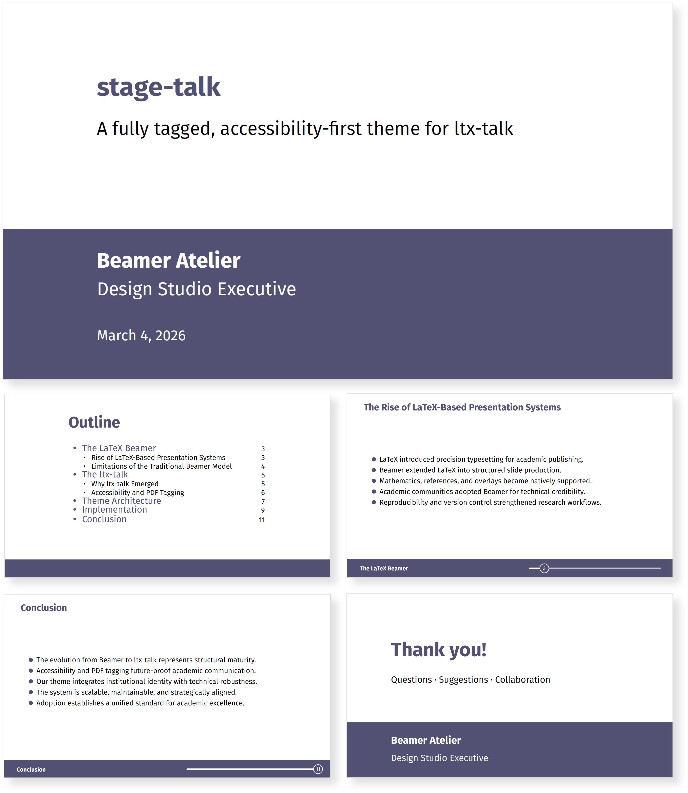

ltx-talk is a modern LaTeX class for building on-screen presentations, handouts, and speaker notes using a frame → slides model with lightweight overlay specifications. It is designed for structured, long-form teaching where clarity, stability, and accessibility matter.
Home Why ltx-talk? Accessibility Install Minimal example Stage-talkStage-talk is a companion theme layer for ltx-talk focused on tagged PDF output for teaching materials. It provides a clean, lecture-first visual system while exposing practical macros and patterns for semantic tagging of tables and figures (reading order, structure, and alternative text), aligning with modern PDF accessibility workflows.

Designed for long-form lectures where clarity and accessibility matter. Stage-talk helps you produce structured, tag-aware slides and handouts by supporting consistent tagging patterns for tables (Table/THead/TBody) and figures with meaningful alt text.
Download Demo (PDF)
Tip: To benefit from tagging, compile with LuaLaTeX and enable tagging via \DocumentMetadata{tagging=on}.
For best results, add alt text to all figures and use the provided table tagging patterns for any tabular data.
Many slide systems optimise for short talks and visual novelty. Teaching is different: it is long-form, content-dense, and requires sustained audience orientation.
ltx-talk is built around a simple idea: content lives in a frame,
and each frame can produce one or more slides (pages) using overlay specifications.
This makes it natural to reveal material step-by-step without duplicating entire slides.
If you have used Beamer, the mental model is familiar (frames, overlays). The difference is that ltx-talk is designed for a modern, accessible PDF workflow and for lecture-style pacing.
Write content once, then use overlay specifications to control when items appear. The class provides a straightforward overlay syntax (e.g., pointed-bracket specifications) to build multi-step explanations without cloning slides.
A stable visual system supports attention. Instead of “effects”, the design emphasis is on sectional structure, consistent margins, and predictable typographic hierarchy.
Lecture delivery often needs multiple outputs: an on-screen deck for class, a handout for revision, and notes for the lecturer. ltx-talk is built with that broader workflow in mind.
Accessibility is not a “nice to have” in modern teaching. Institutions increasingly require documents that work with assistive technologies (screen readers, reflow, proper reading order).
In PDF terms, this typically means producing a tagged PDF that aims for
PDF/UA compliance. LaTeX has made major progress here through the
LaTeX Tagging Project, enabling tagged output through \DocumentMetadata.
In practice, you enable tagging and the PDF standard in the metadata block, and optionally enable MathML tagging:
\DocumentMetadata{
tagging=on,
pdfstandard=ua-2,
lang=en-GB,
tagging-setup={math/setup={mathml-SE,mathml-AF}}
}The best practice is to test your output (reading order, alt text presence, headings hierarchy) using your institution’s tooling and workflows. Accessibility is a workflow, not only a compiler option.
texdoc ltx-talk on your machine.
Your TeX distribution should include the LaTeX PDF management and tagging support packages.
In most modern setups, these are provided automatically when you use \DocumentMetadata.
Here is a compact starter you can copy into main.tex and compile with LuaLaTeX.
\DocumentMetadata{
tagging=on,
pdfstandard=ua-2,
lang=en-GB,
tagging-setup={math/setup={mathml-SE,mathml-AF}}
}
\documentclass{ltx-talk}
\title{A short ltx-talk demo}
\author{Beamer Atelier}
\date{}
\begin{document}
\maketitle
\begin{frame}{Why ltx-talk?}
\begin{itemize}
\item<1-> Teaching-first structure for long-form lectures
\item<2-> Frames can generate multiple slides (overlays)
\item<3-> Designed to work with modern tagged PDF workflows
\end{itemize}
\end{frame}
\begin{frame}{A simple equation}
We can typeset math as usual:
\[ y_t = \alpha + \beta x_t + \varepsilon_t. \]
\end{frame}
\end{document}You can extend this by adding your preferred theme layer (e.g., Stage-talk) for a clean, tag-aware workflow.
Keep the logical order of your explanation aligned with the visual order. Avoid “visual-only” placement that breaks the narrative flow for screen readers.
Every figure should have a concise description that communicates the purpose of the image (not only its appearance).
Use sectioning, consistent headings, and stable layout cues. This improves both accessibility and learning.
It’s best to think of it as a modern presentation class with a similar conceptual model (frames and overlays), but with a different emphasis: stable long-form teaching, multiple outputs, and compatibility with current PDF tagging workflows.
Not always, but building an accessibility-aware workflow now makes your materials more inclusive and more future-proof (especially for institutional and public-facing teaching resources).
You can use them — but accessibility places additional responsibility on reading order, tagging, and alt text. The goal is not to reduce ambition; it is to make sophisticated material reachable for more learners.